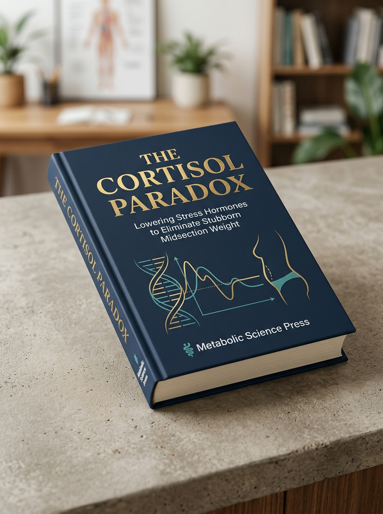
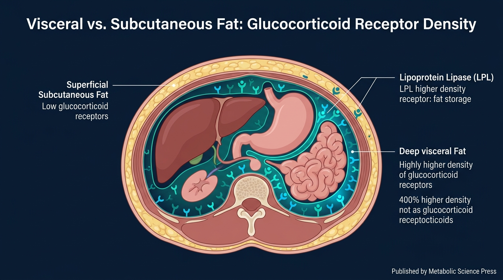
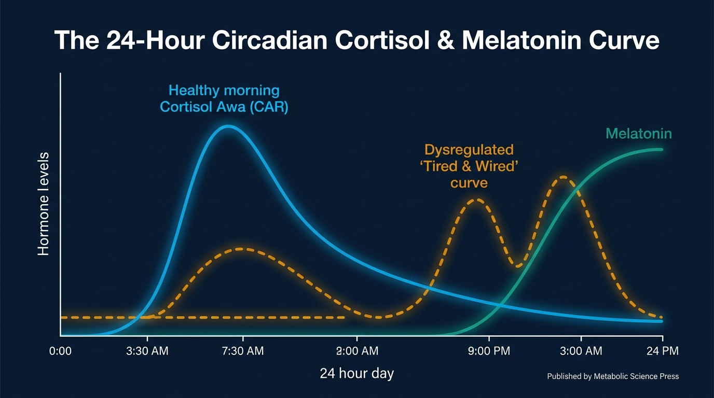
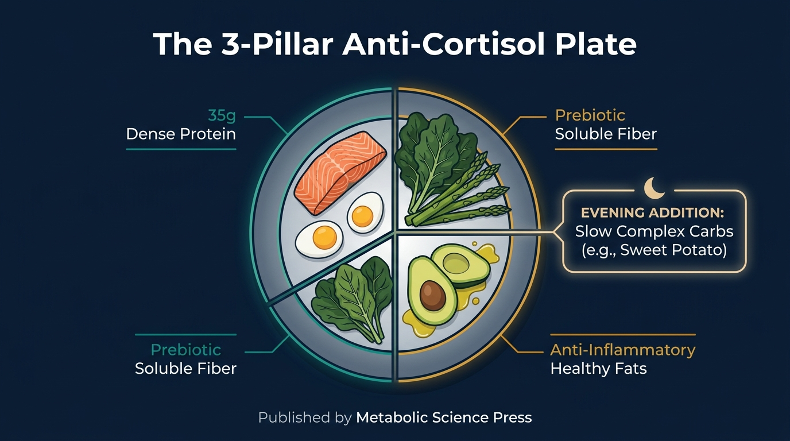
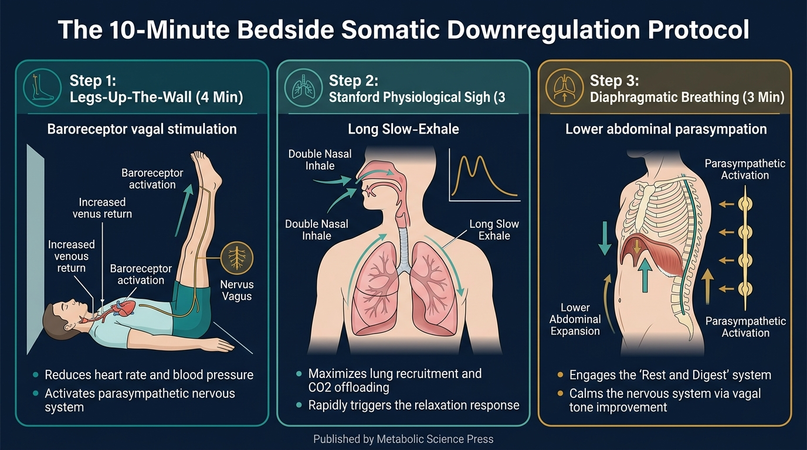

According to 42 clinical trials from Yale, UCLA, and Oxford, visceral abdominal fat is governed by stress-hormone receptors—not a lack of willpower. Discover the 21-day evidence-based protocol that releases stubborn midsection weight.

Why conventional dieting advice breaks down when the autonomic nervous system is stressed.
Every chapter features high-precision medical infographics designed to make complex neuroendocrinology immediately actionable.
Published in Psychosomatic Medicine • Yale University School of Medicine (PMID: 11020091)

Synthesized from Circadian Endocrine Studies • University of Chicago (Sleep Medicine)

Nutritional Biochemistry & Evening Carbohydrate Back-Loading Architecture

Cell Reports Medicine (Stanford University School of Medicine • PMID: 36630873)

Instant lifetime access to the core publication plus both companion toolkits.
Complete 7-chapter first edition featuring all peer-reviewed studies, receptor biology, and the 21-day turnkey reset.
Printable bedside guide with the 60-minute pre-bed countdown, Stanford physiological sigh flow, and nightstand timing chart.
4 weeks of done-for-you breakfasts, lunches, and dinners, master grocery lists, and dining-out hormone survival rules.
Download the complete 3-in-1 bundle today. Review the research citations and implement the gentle morning lux timing, 3-pillar meal pairings, and bedtime somatic protocols. If you experience any technical difficulty accessing your files, or if you apply the protocols and do not feel they delivered immense clarity, contact our support desk within 14 days and we will immediately take care of you.
Everything you need to know about the publication and digital delivery.